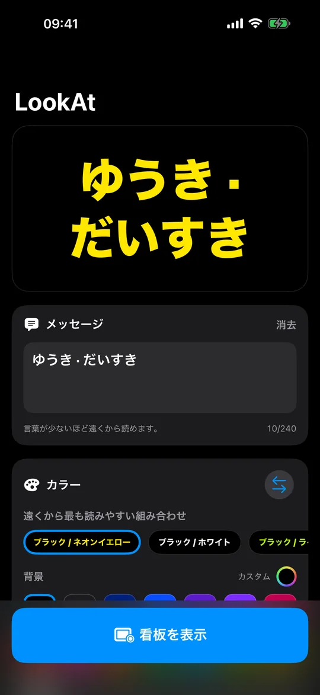
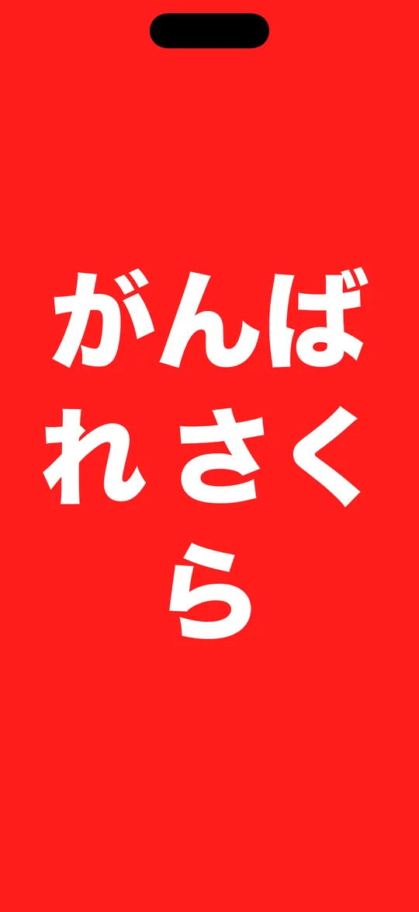
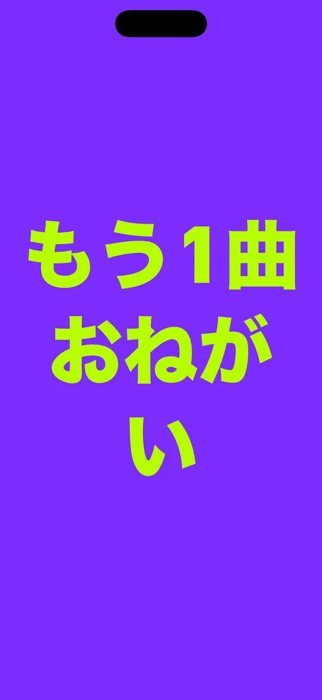
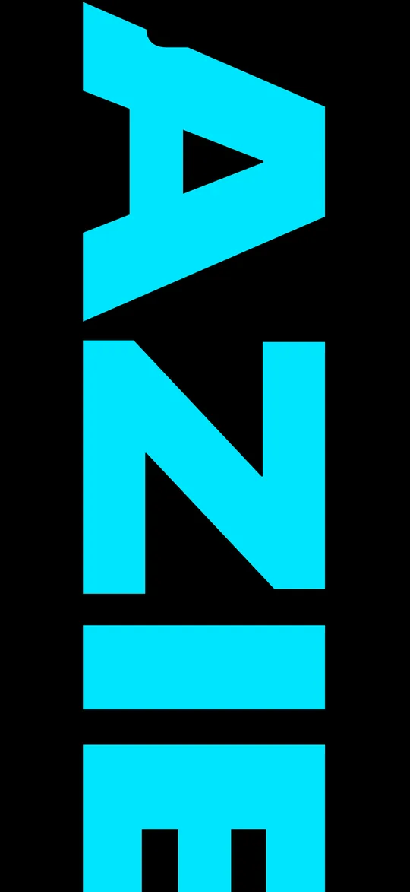

測った色
ちゃんと
読める組み合わせ
実際のWCAGコントラストを、暗くなる前に検査。
スマホを掲げて
入力して、色を2つ選んで、掲げるだけ。
スマホを掲げて、気づいてもらう。LookAtは画面を看板に変えます。文字は会場の後ろからでも読める大きさ。メッセージを入力し、色を2つ選んで、掲げるだけです。
無料 · iPhoneとiPad · iOS 18以降
距離を制するのは文字の高さとコントラストであって、明るさだけではありません。LookAtはどの書体も大文字の高さを基準にサイズを決めるので、どれを選んでも文字が画面に占める割合は同じです。さらに2色間の実際のWCAGコントラストを測定し、誰にも読めない組み合わせのまま暗い会場に入る前に警告します。本当にぎりぎりの組み合わせには、ふちに光を加えます。

測った色
実際のWCAGコントラストを、暗くなる前に検査。
ドットマトリクス
フォントではありません。文字は1灯ずつ描かれています。

背景15色・文字14色
7つの書体、すべて遠距離のために選びました。

スクロール・固定・点滅
最大240文字、速さはあなた次第。

文字サイズ
文字サイズを100%に。特大の文字が流れます。
アカウント不要。広告なし。トラッキングなし。通信も一切ありません。LookAtは接続を要求したことがないので、入力した内容がスマホの外に出ることはありません。無料で、アプリ内に買うものはありません。
スマホにできることについて一言。画面は明るいですが、大型ビジョンではありません。直射日光の下や数十メートル以上離れた場所では、どんなに良い配色でも負けます。LookAtが最も力を発揮するのは屋内、日没後、そして人混みの中です。到着ロビー、ライブ、ゴール地点、学校の発表会。
今夜のライブ、あの曲をリクエストしたい？人混みに埋もれてる？LookAtに書いて、スマホを掲げて、気づいてもらおう。
無料 · iPhoneとiPad · iOS 18以降